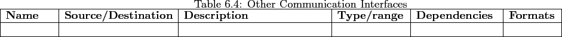

Next:
System Features
Up:
External Interface Requirements
Previous:
User Interfaces
Contents
Other Communication Interfaces
GUS will interface with the university career seeking site and social networking sites.

Colby Blair 2011-02-25